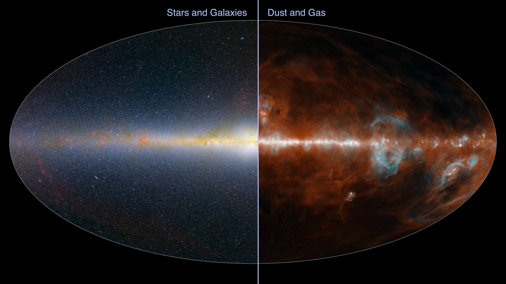
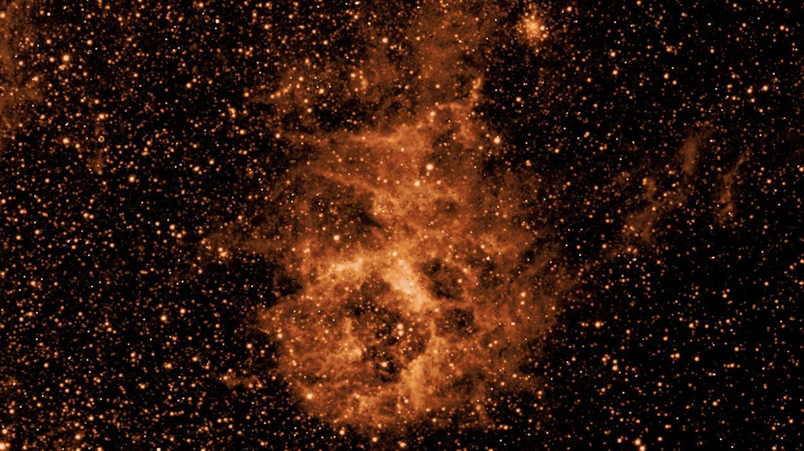

Data · IRSA · Nov 12, 2026
The sky in 102 colors.
SPHEREx maps the sky in infrared light. Explore its images, mission data and latest milestones.
Explore the missionA project by Gabriela Meza
Grade 8D · IED Bilingüe Nueva Granada

SPHEREx sees
The telescope records light our eyes cannot see. Its measurements reveal galaxies, dust clouds and interstellar ice.
- Infrared bands
- 102
- Planned sky surveys
- 4
- Wavelength range
- 0.75–5 µm
- Launched Mar 11
- 2025

News and data
Updates from the mission and its science archive.
NASA · Oct 8, 2026
SPHEREx reveals a variety of brown dwarfs
Data · IRSA · Sep 2026
Third quick release begins publishing images
Includes spectral images from surveys 3 and 4.NASA · Apr 17, 2026
SPHEREx maps interstellar ice in the Milky Way
NASA · Dec 18, 2025
SPHEREx completes its first full-sky infrared map
Mission timeline
- Observatory launch.
- First complete infrared sky map.
- Images from surveys 3 and 4.
- First science data release.